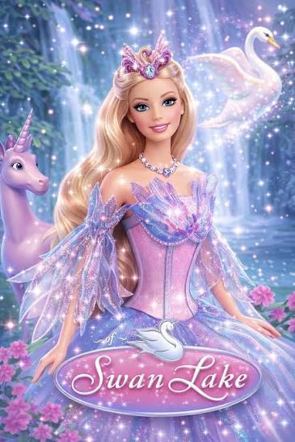
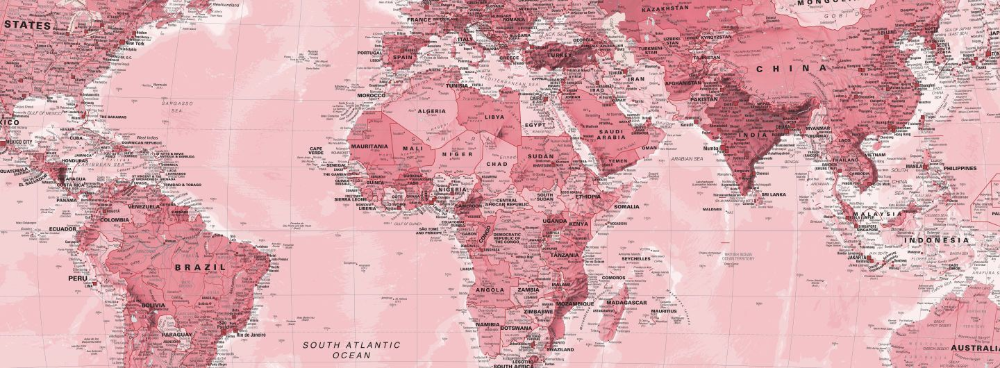

Lançado em 2003, este filme de animação, fantasia e musical é inspirado no famoso balé O Lago dos Cisnes, de Tchaikovsky. A história mistura magia, amizade e romance em cenários encantados.
Barbie dá vida a Odette, uma jovem que entra na Floresta Encantada e descobre que o mágico Rothbart quer dominar o reino. Com a ajuda da fada Lila, ela se transforma em cisne e conhece o príncipe Daniel, com quem enfrenta os planos do vilão.
Com cenas de balé, trilha sonora clássica e visuais cheios de brilho, o filme mostra que a coragem, a bondade e a confiança em si mesma ajudam a superar qualquer desafio.
Lançamento: 2003 | Gênero: animação, fantasia e musical
Reveja os filmes de animação da Barbie, com aventuras, músicas e histórias cheias de magia.
Conheça as princesas, fadas, príncipes e vilões que fazem parte do universo da Barbie.
Descubra detalhes e bastidores sobre os filmes e a história da Barbie.
Explore nossos filmes, personagens e curiosidades e entre no mundo mágico da Barbie.
CONHECER OS FILMES
Endereço: Rua das Estrelas, 123 - Centro
Cidade: São Paulo - SP
CEP: 01000-000
Horário: Segunda a sexta, das 9h às 18h
Ponto de referência: Próximo à estação de metrô
O primeiro filme de animação foi Barbie em O Quebra-Nozes, lançado em 2001. Depois dele vieram vários outros, como Barbie em O Lago dos Cisnes, de 2003.
A Barbie dá vida a Odette, uma jovem que entra na Floresta Encantada e, com a ajuda da fada Lila, se transforma em cisne.
O vilão é o mágico Rothbart, que quer dominar o reino. Odette e o príncipe Daniel enfrentam os planos dele ao longo do filme.
Sim. A história é inspirada no famoso balé O Lago dos Cisnes, de Tchaikovsky, e por isso tem cenas de balé e trilha sonora clássica.